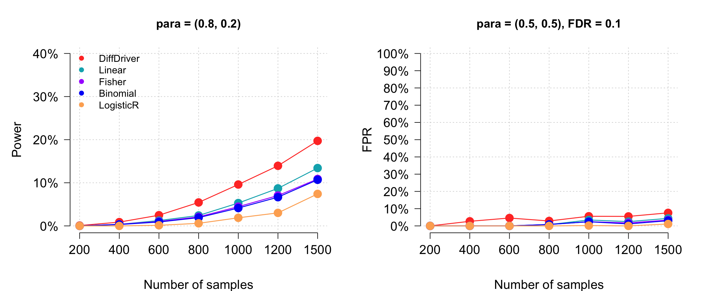
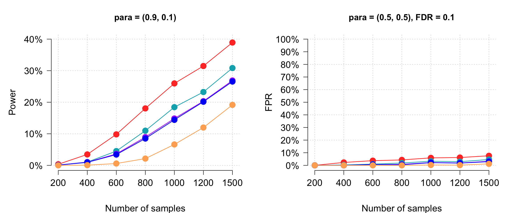
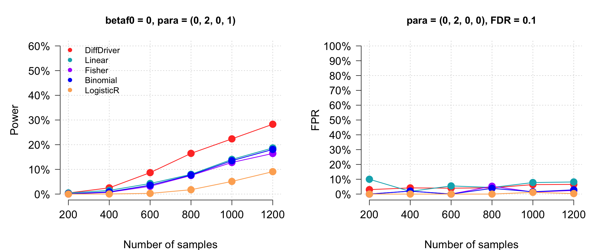
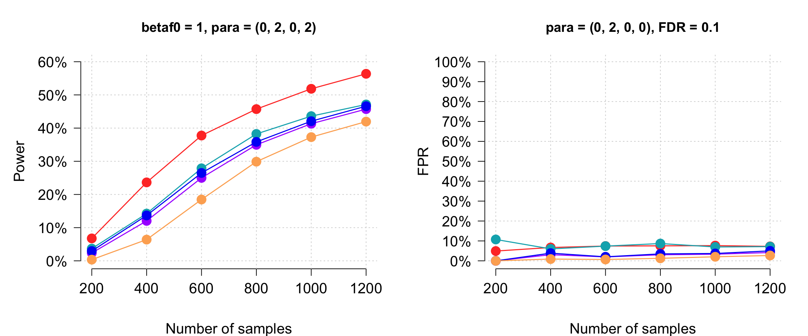
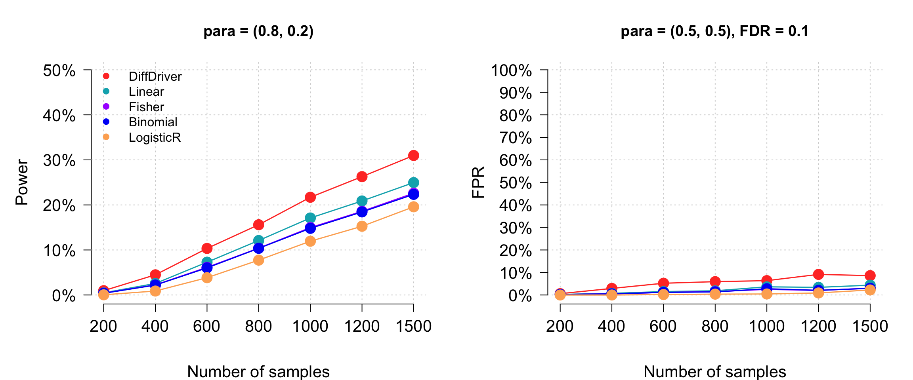
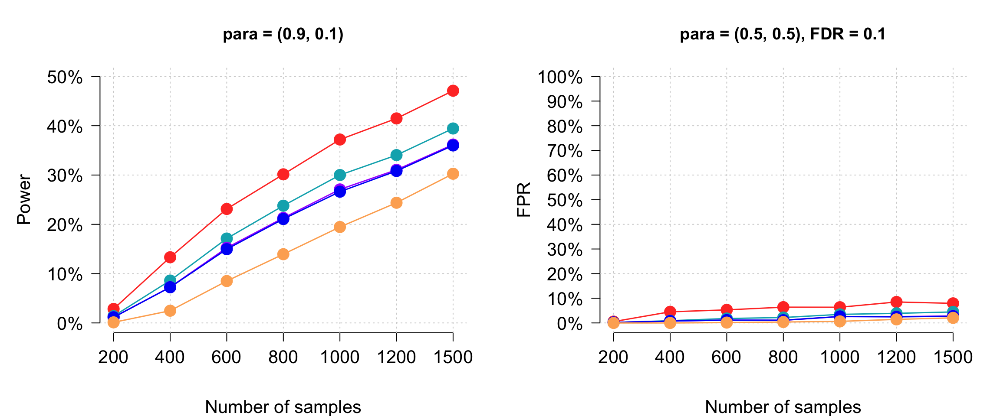
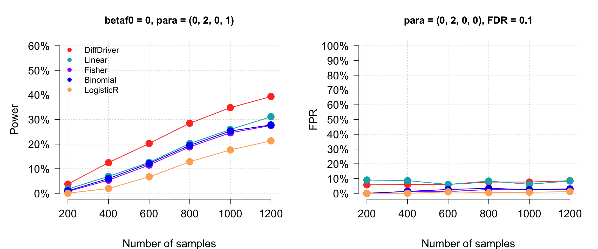
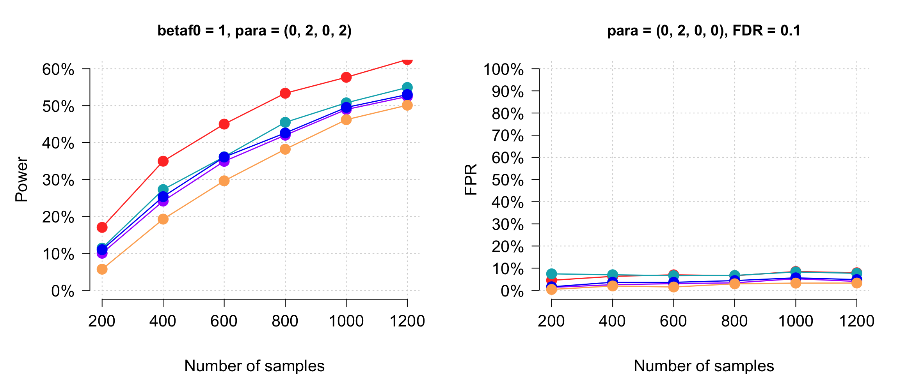

Last updated: 2026-03-18
Checks: 6 1
Knit directory: DiffDriver-PAPER/
This reproducible R Markdown analysis was created with workflowr (version 1.7.1). The Checks tab describes the reproducibility checks that were applied when the results were created. The Past versions tab lists the development history.
The R Markdown file has unstaged changes. To know which version of
the R Markdown file created these results, you’ll want to first commit
it to the Git repo. If you’re still working on the analysis, you can
ignore this warning. When you’re finished, you can run
wflow_publish to commit the R Markdown file and build the
HTML.
Great job! The global environment was empty. Objects defined in the global environment can affect the analysis in your R Markdown file in unknown ways. For reproduciblity it’s best to always run the code in an empty environment.
The command set.seed(20260206) was run prior to running
the code in the R Markdown file. Setting a seed ensures that any results
that rely on randomness, e.g. subsampling or permutations, are
reproducible.
Great job! Recording the operating system, R version, and package versions is critical for reproducibility.
Nice! There were no cached chunks for this analysis, so you can be confident that you successfully produced the results during this run.
Great job! Using relative paths to the files within your workflowr project makes it easier to run your code on other machines.
Great! You are using Git for version control. Tracking code development and connecting the code version to the results is critical for reproducibility.
The results in this page were generated with repository version 2efcea0. See the Past versions tab to see a history of the changes made to the R Markdown and HTML files.
Note that you need to be careful to ensure that all relevant files for
the analysis have been committed to Git prior to generating the results
(you can use wflow_publish or
wflow_git_commit). workflowr only checks the R Markdown
file, but you know if there are other scripts or data files that it
depends on. Below is the status of the Git repository when the results
were generated:
Ignored files:
Ignored: analysis/Simulation-Power_files/
Unstaged changes:
Modified: analysis/Simulation-Power.Rmd
Modified: analysis/_site.yml
Deleted: analysis/about.Rmd
Deleted: analysis/license.Rmd
Deleted: analysis/real-data.Rmd
Deleted: analysis/simulation.Rmd
Note that any generated files, e.g. HTML, png, CSS, etc., are not included in this status report because it is ok for generated content to have uncommitted changes.
These are the previous versions of the repository in which changes were
made to the R Markdown (analysis/Simulation-Power.Rmd) and
HTML (docs/Simulation-Power.html) files. If you’ve
configured a remote Git repository (see ?wflow_git_remote),
click on the hyperlinks in the table below to view the files as they
were in that past version.
| File | Version | Author | Date | Message |
|---|---|---|---|---|
| Rmd | 2efcea0 | Siming | 2026-03-17 | Refactor simulation pipeline and reorganize analysis site |
| Rmd | f572052 | Siming Zhao | 2026-03-03 | simulation code |
| html | 0fd83c1 | Qirui Zhang | 2026-02-12 | Build site. |
| html | e24c6e4 | Qirui Zhang | 2026-02-12 | Build site. |
| html | 9a0bb77 | Qirui Zhang | 2026-02-12 | Build site. |
| html | 24651e6 | Qirui Zhang | 2026-02-12 | Build site. |
| Rmd | 92fca54 | Qirui Zhang | 2026-02-12 | rebuild |
| html | df72d55 | Qirui Zhang | 2026-02-07 | Build site. |
| Rmd | 3d2e0bb | Qirui Zhang | 2026-02-07 | Initial version of DiffDriver project |
For 200 genes with five functional annotations, we compare the power (sensitivity) and false positive rate (FPR) of DiffDriver against benchmark methods: Linear regression, Fisher’s exact test, Binomial test, and Logistic Regression.
The first 50 genes have differential selection while the remaining 150 do not. FDR is controlled at 0.1 using the BH procedure.
These simulations use the same pipeline described in Simulation Code. The key parameters are:
| Parameter | Description |
|---|---|
betaf0 |
Baseline functional effect size: 0 or 1 |
para |
Binary: selection probabilities c(prob_case, prob_control). Continuous: c(mean, sd, intercept, slope) |
beta_gc |
Functional effect coefficients (TSGpars or OGpars) |
Nsample |
Varies: 200, 400, 600, 800, 1000, 1200, 1500 |
Niter |
100 (binary) or 50 (continuous) per gene |
(Intercept)=0.851, functypecode8=0.458, mycons=0.137, sift=0.124, phylop100=0.083, MA=0.306(Intercept)=0.450, functypecode8=-0.186, mycons=0.316, sift=0.020, phylop100=0.256, MA=0.140knitr::opts_chunk$set(echo = TRUE)
METHODS <- c("DiffDriver", "Linear", "Fisher", "Binomial", "LogisticR")
MYCOL <- c("#FF3D2E", "#00AFBB", "#aa00ff", "#0001f6", "#fdae61")
FDR <- 0.1
BINARY_SIZES <- c(200, 400, 600, 800, 1000, 1200, 1500)
CONTI_SIZES <- c(200, 400, 600, 800, 1000, 1200)
#' Compute power and FPR from p-value matrices across simulation iterations.
#' @param m.pvalue List of matrices (one per method), each n_genes x Nsim.
#' @param Nsim Number of simulation iterations.
#' @param n_true Number of true positive genes (first n_true genes).
compute_metrics <- function(m.pvalue, Nsim, n_true = 50) {
n_methods <- length(m.pvalue)
power <- fpr <- numeric(n_methods)
for (k in seq_len(n_methods)) {
sens <- fpr_vals <- numeric(Nsim)
for (j in seq_len(Nsim)) {
hits <- which(p.adjust(m.pvalue[[k]][, j], method = "BH") < FDR)
if (length(hits) > 0) {
sens[j] <- sum(hits <= n_true) / n_true
fpr_vals[j] <- sum(hits > n_true) / length(hits)
}
}
power[k] <- mean(sens)
fpr[k] <- mean(fpr_vals)
}
list(power = power, fpr = fpr)
}
#' Load pre-computed simulation results and compute power/FPR per sample size.
#'
#' Each sample size x gene combination has two result files in subdirectories
#' diffFix/ and other/ under base_path. The p-values are extracted as:
#' DiffDriver = simuresdiffFix$m1.pvalue
#' Linear/Fisher/Binomial/LogisticR = simuresother$m1--m4.pvalue
#'
#' @param base_path Directory containing diffFix/ and other/ subdirectories.
#' @param file_fn Function(Nsample, gene_index) returning the .Rd filename.
#' @param sample_sizes Vector of sample sizes to evaluate.
#' @param Nsim Max number of iterations to use. If NULL, uses all available.
#' @param n_genes Number of genes (default 200).
load_and_compute <- function(base_path, file_fn, sample_sizes,
Nsim = NULL, n_genes = 200) {
n_methods <- length(METHODS)
power_mat <- fpr_mat <- matrix(
nrow = n_methods, ncol = length(sample_sizes),
dimnames = list(METHODS, sample_sizes)
)
for (s in seq_along(sample_sizes)) {
N <- sample_sizes[s]
m.pvalue <- NULL
n_iter <- NULL
for (g in seq_len(n_genes)) {
fname <- file_fn(N, g)
load(file.path(base_path, "diffFix", fname))
load(file.path(base_path, "other", fname))
if (is.null(n_iter)) {
n_avail <- length(simuresdiffFix[["m1.pvalue"]])
n_iter <- if (!is.null(Nsim)) min(Nsim, n_avail) else n_avail
m.pvalue <- lapply(seq_len(n_methods), function(x)
matrix(nrow = n_genes, ncol = n_iter))
}
idx <- seq_len(n_iter)
m.pvalue[[1]][g, ] <- simuresdiffFix[["m1.pvalue"]][idx]
m.pvalue[[2]][g, ] <- simuresother[["m1.pvalue"]][idx]
m.pvalue[[3]][g, ] <- simuresother[["m2.pvalue"]][idx]
m.pvalue[[4]][g, ] <- simuresother[["m3.pvalue"]][idx]
m.pvalue[[5]][g, ] <- simuresother[["m4.pvalue"]][idx]
}
metrics <- compute_metrics(m.pvalue, n_iter)
power_mat[, s] <- metrics$power
fpr_mat[, s] <- metrics$fpr
}
list(power = power_mat, fpr = fpr_mat)
}
#' Plot power and FPR side by side.
#' @param res Output from load_and_compute (list with power and fpr matrices).
#' @param power_title Title for the power panel.
#' @param fpr_title Title for the FPR panel.
#' @param power_ylim Y-axis upper limit for the power panel.
#' @param show_legend Whether to show the method legend on the power panel.
plot_power_fpr <- function(res, power_title, fpr_title,
power_ylim = 0.4, show_legend = TRUE) {
x <- seq_len(ncol(res$power))
sizes <- colnames(res$power)
par(mfrow = c(1, 2), mar = c(5, 6, 4, 2))
# Power panel
plot(x, ylim = c(0, power_ylim), col = "white", ylab = "Power",
xlab = "Number of samples", yaxt = "n", xaxt = "n", bty = "n",
cex.lab = 1.3, mgp = c(4, 1, 0))
title(power_title)
yticks <- seq(0, power_ylim, 0.1)
axis(2, at = yticks, lab = paste0(yticks * 100, "%"), las = 2, cex.axis = 1.3)
axis(1, at = x, lab = sizes, cex.axis = 1.3)
grid()
for (r in seq_len(nrow(res$power))) {
points(x, res$power[r, ], col = MYCOL[r], pch = 19, cex = 1.8)
lines(x, res$power[r, ], col = MYCOL[r], lwd = 1.5)
}
if (show_legend) {
legend("topleft", legend = METHODS, col = MYCOL[seq_along(METHODS)],
lwd = 1, bty = "n", lty = NA, pch = 19)
}
# FPR panel
plot(x, ylim = c(0, 1), col = "white", ylab = "FPR",
xlab = "Number of samples", yaxt = "n", xaxt = "n", bty = "n",
cex.lab = 1.3, mgp = c(4, 1, 0))
title(fpr_title)
axis(2, at = seq(0, 1, 0.1), lab = paste0(seq(0, 100, 10), "%"),
las = 2, cex.axis = 1.3)
axis(1, at = x, lab = sizes, cex.axis = 1.3)
grid()
for (r in seq_len(nrow(res$fpr))) {
points(x, res$fpr[r, ], col = MYCOL[r], pch = 19, cex = 1.8)
lines(x, res$fpr[r, ], col = MYCOL[r], lwd = 1.5)
}
}res <- load_and_compute(
base_path = "/Volumes/Szhao/jiezhou/diffdata/gene239/conti/TSG_BRCA",
file_fn = function(N, g) paste0("pppower_betaf0=0_sample", N, "_", g, ".Rd"),
sample_sizes = BINARY_SIZES
)
plot_power_fpr(res,
power_title = "para = (0.8, 0.2)",
fpr_title = "para = (0.5, 0.5), FDR = 0.1"
)
res <- load_and_compute(
base_path = "/Volumes/Szhao/jiezhou/diffdata/gene239/conti/TSG_BRCA/TSG0.9/TSG_gene",
file_fn = function(N, g) paste0("pppower_betaf0=0_sample", N, "_", g, ".Rd"),
sample_sizes = BINARY_SIZES
)
plot_power_fpr(res,
power_title = "para = (0.9, 0.1)",
fpr_title = "para = (0.5, 0.5), FDR = 0.1",
show_legend = FALSE
)
Continuous phenotype with para = c(0, 2, 0, 1):
phenotype ~ N(0, 2), selection probability determined by logistic
regression with intercept = 0 and slope = 1.
res <- load_and_compute(
base_path = "/Volumes/Szhao/jiezhou/diffdata/gene239/conti/TSG_BRCA/conti/conti2",
file_fn = function(N, g) paste0("pppower_betaf0=0_sample", N, "_", g, ".Rd"),
sample_sizes = CONTI_SIZES
)
plot_power_fpr(res,
power_title = "betaf0 = 0, para = (0, 2, 0, 1)",
fpr_title = "para = (0, 2, 0, 0), FDR = 0.1",
power_ylim = 0.6
)
res <- load_and_compute(
base_path = "/Volumes/Szhao/jiezhou/diffdata/gene239/conti/TSG_BRCA/conti/conti2",
file_fn = function(N, g) paste0("pppower_betaf0=1_sample", N, "_", g, ".Rd"),
sample_sizes = CONTI_SIZES
)
plot_power_fpr(res,
power_title = "betaf0 = 1, para = (0, 2, 0, 2)",
fpr_title = "para = (0, 2, 0, 0), FDR = 0.1",
power_ylim = 0.6,
show_legend = FALSE
)
res <- load_and_compute(
base_path = "/Volumes/Szhao/jiezhou/diffdata/binaryEM/OG_gene",
file_fn = function(N, g) paste0("pppower_betaf0=0_sample", N, "_0.8_", g, ".Rd"),
sample_sizes = BINARY_SIZES
)
plot_power_fpr(res,
power_title = "para = (0.8, 0.2)",
fpr_title = "para = (0.5, 0.5), FDR = 0.1",
power_ylim = 0.5
)
res <- load_and_compute(
base_path = "/Volumes/Szhao/jiezhou/diffdata/binaryEM/OG_gene",
file_fn = function(N, g) paste0("pppower_betaf0=0_sample", N, "_0.9_", g, ".Rd"),
sample_sizes = BINARY_SIZES
)
plot_power_fpr(res,
power_title = "para = (0.9, 0.1)",
fpr_title = "para = (0.5, 0.5), FDR = 0.1",
power_ylim = 0.5,
show_legend = FALSE
)
Continuous phenotype with para = c(0, 2, 0, 1):
phenotype ~ N(0, 2), selection probability determined by logistic
regression with intercept = 0 and slope = 1.
res <- load_and_compute(
base_path = "/Volumes/Szhao/jiezhou/diffdata/gene239/conti/OCG/OG_gene",
file_fn = function(N, g) paste0("pppower_betaf0=0_sample", N, "_", g, ".Rd"),
sample_sizes = CONTI_SIZES
)
plot_power_fpr(res,
power_title = "betaf0 = 0, para = (0, 2, 0, 1)",
fpr_title = "para = (0, 2, 0, 0), FDR = 0.1",
power_ylim = 0.6
)
res <- load_and_compute(
base_path = "/Volumes/Szhao/jiezhou/diffdata/gene239/conti/OCG/OG_gene",
file_fn = function(N, g) paste0("pppower_betaf0=1_sample", N, "_", g, ".Rd"),
sample_sizes = CONTI_SIZES
)
plot_power_fpr(res,
power_title = "betaf0 = 1, para = (0, 2, 0, 2)",
fpr_title = "para = (0, 2, 0, 0), FDR = 0.1",
power_ylim = 0.6,
show_legend = FALSE
)
R version 4.3.2 (2023-10-31)
Platform: aarch64-apple-darwin20 (64-bit)
Running under: macOS Sonoma 14.6.1
Matrix products: default
BLAS: /Library/Frameworks/R.framework/Versions/4.3-arm64/Resources/lib/libRblas.0.dylib
LAPACK: /Library/Frameworks/R.framework/Versions/4.3-arm64/Resources/lib/libRlapack.dylib; LAPACK version 3.11.0
locale:
[1] en_US.UTF-8/en_US.UTF-8/en_US.UTF-8/C/en_US.UTF-8/en_US.UTF-8
time zone: America/New_York
tzcode source: internal
attached base packages:
[1] stats graphics grDevices utils datasets methods base
other attached packages:
[1] workflowr_1.7.1
loaded via a namespace (and not attached):
[1] vctrs_0.7.1 httr_1.4.8 cli_3.6.5 knitr_1.51
[5] rlang_1.1.7 xfun_0.56 stringi_1.8.7 otel_0.2.0
[9] processx_3.8.5 promises_1.5.0 jsonlite_2.0.0 glue_1.8.0
[13] rprojroot_2.0.4 git2r_0.36.2 htmltools_0.5.9 httpuv_1.6.15
[17] ps_1.8.1 sass_0.4.10 rmarkdown_2.30 jquerylib_0.1.4
[21] tibble_3.3.1 evaluate_1.0.5 fastmap_1.2.0 yaml_2.3.12
[25] lifecycle_1.0.5 whisker_0.4.1 stringr_1.6.0 compiler_4.3.2
[29] fs_1.6.7 pkgconfig_2.0.3 Rcpp_1.1.1 rstudioapi_0.17.1
[33] later_1.4.8 digest_0.6.39 R6_2.6.1 pillar_1.11.1
[37] callr_3.7.6 magrittr_2.0.4 bslib_0.10.0 tools_4.3.2
[41] cachem_1.1.0 getPass_0.2-4